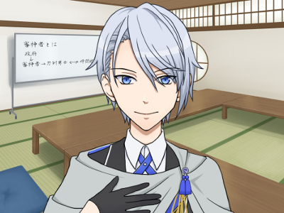

「生きている限り未来は無限だ」
自殺者の中から審神者候補を選定する為過去へ派遣されていた刀剣男士。政府に所属しており特定の主はいない。
審神者として選んだ人間以外は歴史通りに自殺しており、その死に様を全て見届けている。
主人公には他の候補者達の分までまっすぐに生きて欲しいと願っており、卑屈な考えを改めない主人公を時折キツイ口調で叱りつつも、見放すことなくサポートしてくれる。
ただし、政府の所属である以上政府と対立するような事があればどちらにつくかはわからない。